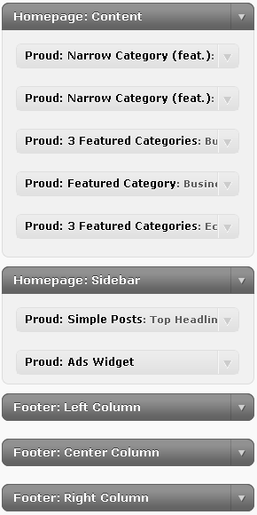

Daily Headlines is a magazine theme with a very flexible and intuitive layout.

All themes by ProudThemes.com can be installed directly from the Dashboard: go to Appearance > Themes and click Add New > Upload.
Once you've uploaded and activated Daily Headlines Theme you will be automatically redirected to the Theme Options Page.
There you will be able to tweak some settings and options, make sure to check them all out. We tried to make the process as simple as possible.
All our themes support the Post Thumbnail feature that was introduced with WordPress 2.9.
On the Add/Edit Post page, on the right, you will see the Post Thumbnail box. Use it to upload an image as a thumbnail for the current post or click the "Use as thumbnail" link on images that are already uploaded.
Make sure to set the permissions on the /themes/daily-headlines/scripts/cache folder to 777 to allow TimThumb to automatically generate thumbnails.
Daily Headlines Theme fully supports the new Menu Management feature of WP 3.0 and has 2 different menu locations: one at the top of the page and one in the footer (bottom).
If you are not familiar with the new Menu Management in WordPress 3.0, you might want to read this small tutorial: Custom Menu Management in WordPress 3.0
Daily Headlines Theme includes 5 unique widgets developed by ProudThemes.com specifically for this theme.
Important: You can add as many widgets as you like, thus giving you the ability to add as much content to the homepage as necessary .
Daily Headlines Theme includes 3 page layouts: default (sidebar on the right), full width (full page width, no sidebar), left (sidebar on the left).
How To: To use one of the three custom layouts, simply choose the style from the Template field on the Edit Page page.
Daily Headlines Theme has been developed for the most recent official (stable) release of WordPress (3.0 at the time of writing this).
It is guaranteed to work on a clean instance of WordPress and does not require any third-party plug-ins.
All theme support is provided only via our special Support Forum: http://www.proudthemes.com/forum/.
To gain access to the forum, first you will have to log in using the credentials you provided when signing up with ProudThemes.com
We will NOT provide support via E-Mail, Skype, Twitter, Facebook or other means of communication.
Daily Headlines Theme has been developed by ProudThemes.com and is property of ProudThemes.com
Daily Headlines Theme may be applied to unlimited websites for the developer's purposes, but cannot be freely re-distributed to the public or re-sold verbatim as Daily Headlines Theme. It may be modified for your own projects.